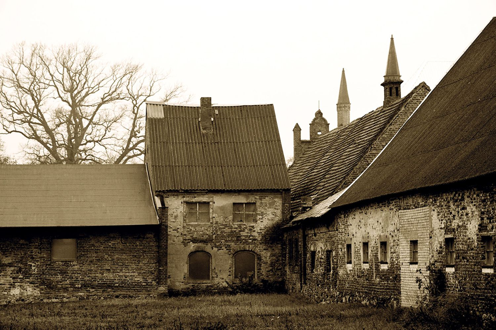
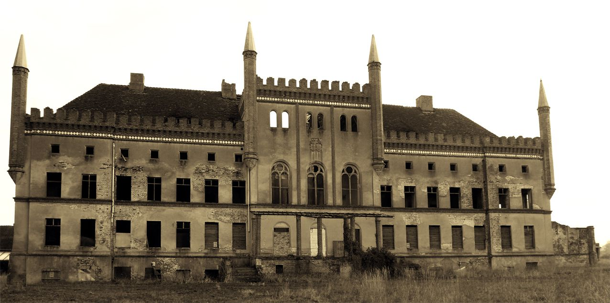

Damals

In unserem Extrablatt vor 3 Jahren: „Wunderbar: Unmittelbar vor der Weihnachtsfeier der Alt Telliner Gemeindevertreter am 15.12.2016 traf sich endlich eine Interessengruppe zur Rettung und kulturellen Belebung der Broocker Gutsanlage am Tollensetal“.
Wer genauer wissen will, wie ein aufgegebener Ort zum neuen Hoffnungsträger wurde, kann sich hier gern näher informieren: http://freiraumbroock.blogspot.com/
